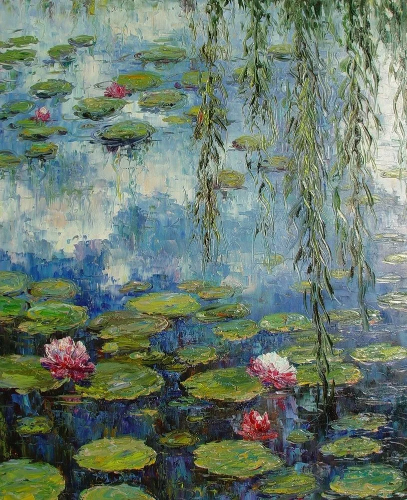
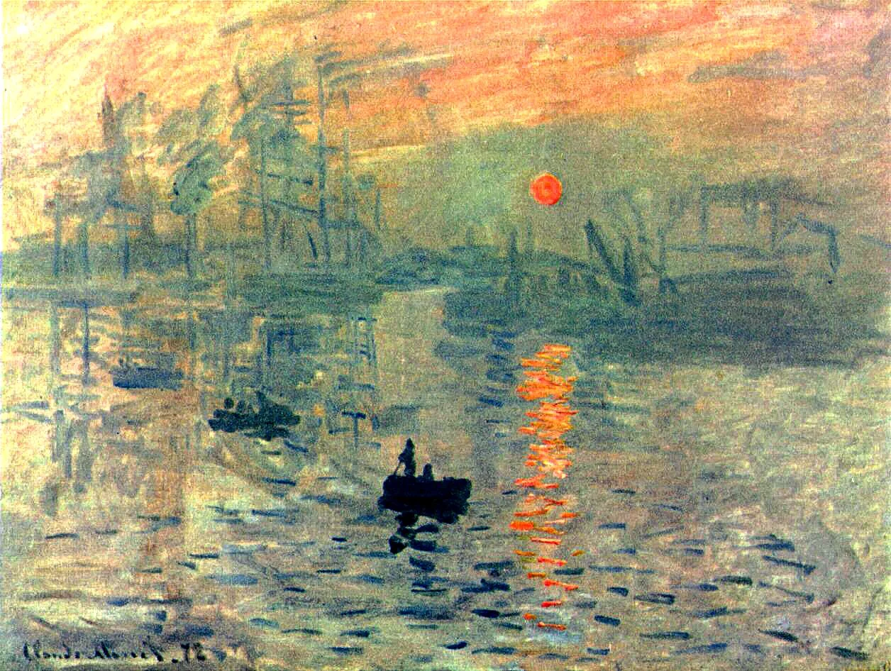
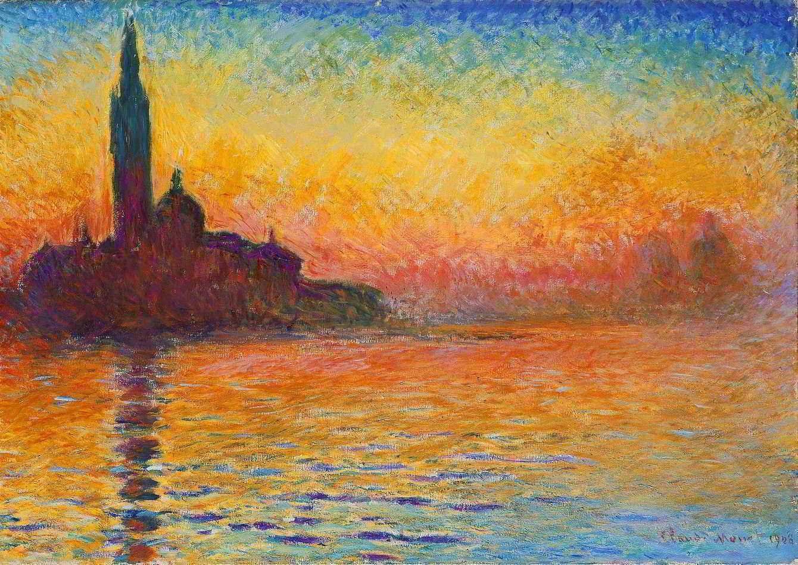
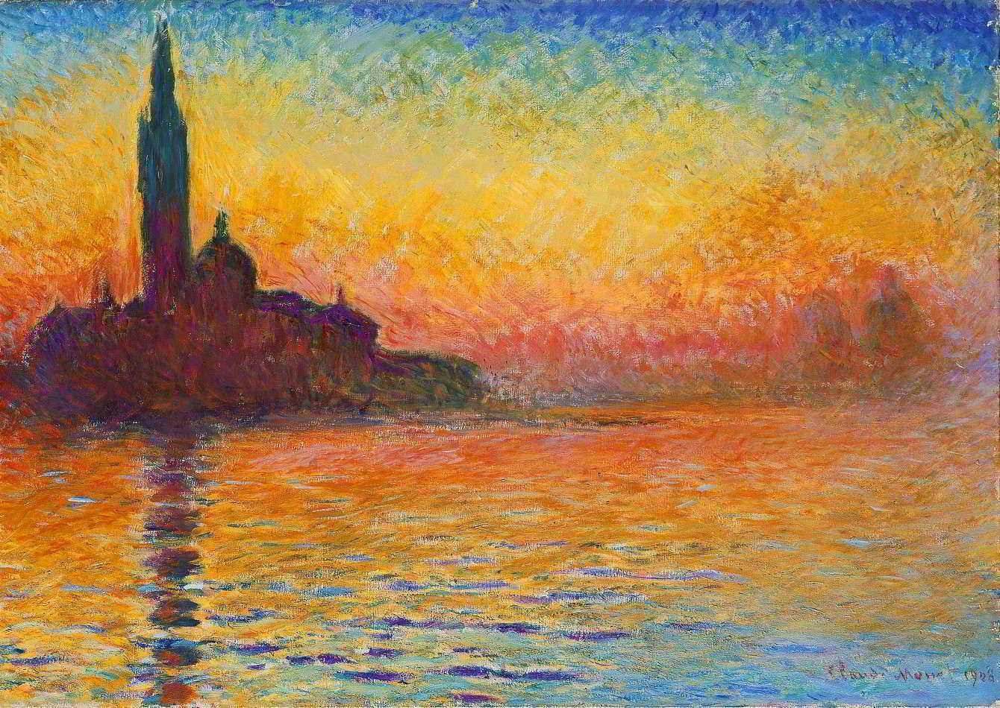
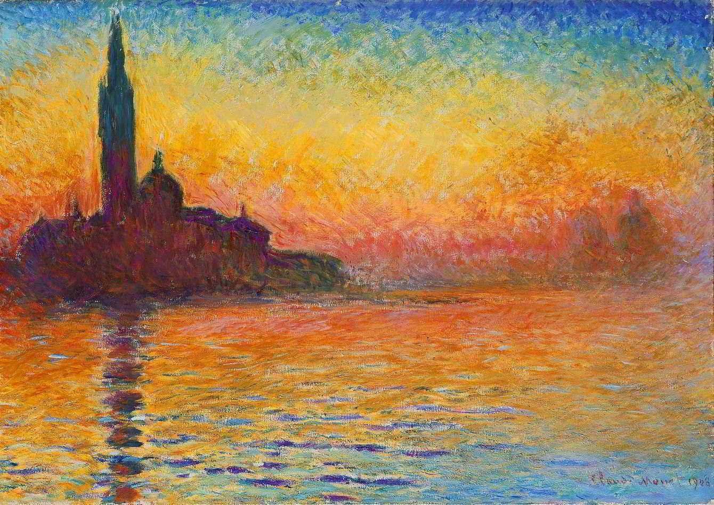
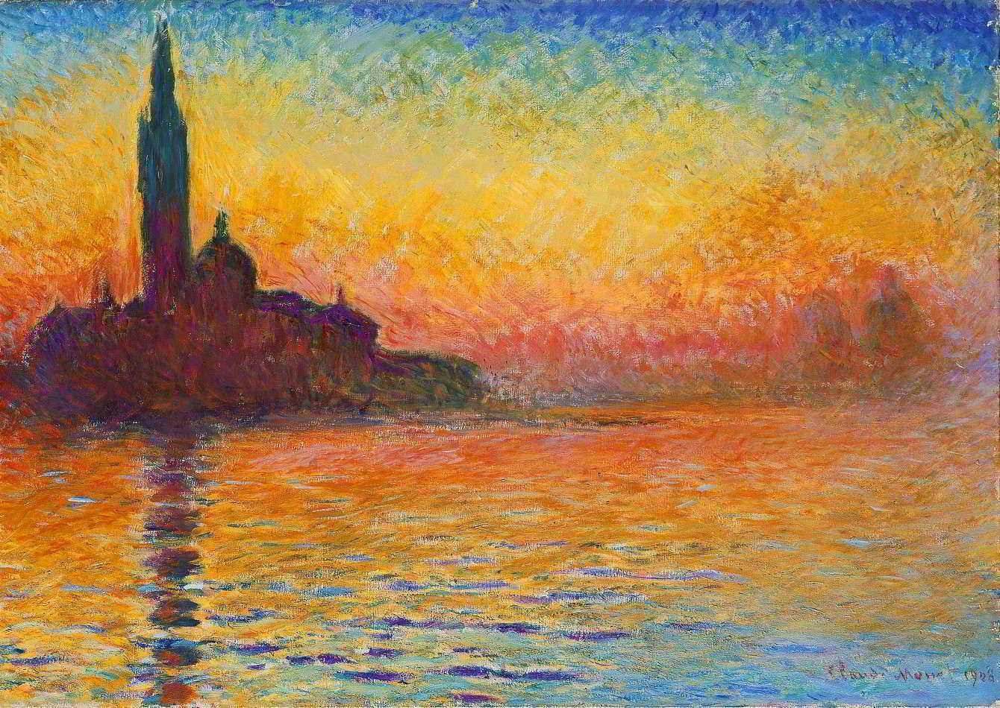

 



A pintura Claude Monet nascer do sol, com o título original "Impressão, nascer do sol", é uma obra de 1872 que retrata o porto de Le Havre ao amanhecer, e deu nome ao movimento impressionista. Monet utilizou pinceladas rápidas e cores vibrantes para captar a luz e a atmosfera da cena, chocando os críticos e inaugurando o estilo que revolucionou a arte moderna.
Oscar-Claude Monet
(Paris, 14 de novembro de 1840 — Giverny, 5 de dezembro de 1926)
foi um
pintor
francês
e o mais célebre entre os pintores impressionistas.
˚₊· ͟͟͞͞➳❥ Começou com um grupo de jovens pintores que rompeu com as regras da pintura vigentes até então. Os
autores
impressionistas não mais se preocupavam com os preceitos do realismo e/ou da academia. A busca pelos elementos
fundamentais de cada arte levou os pintores impressionistas a pesquisar a produção pictórica não mais
interessados em temáticas nobres ou no retrato fiel da realidade, mas em ver o quadro como obra em si mesma. A
luz e o movimento utilizando pinceladas soltas tornam-se o principal elemento da pintura, sendo que geralmente
as telas eram pintadas ao ar livre para que o pintor pudesse capturar melhor as variações de cores da natureza.
˚₊· ͟͟͞͞➳❥ O impressionismo é uma arte visual, onde a representação do que se vê é o tema central das obras do movimento. As cenas pintadas são, em grande parte, apenas as que são observadas pelo próprio pintor. Neste sentido, o “ver” do impressionismo assume outro sentido; é o de selecionar, recortar, modelar de acordo com o objeto que se observa diretamente. Os artistas do impressionismo selecionam a impressão como uma experiência importante a ser valorizada.
╰┈➤ O impressionismo não foi aceito em princípio na Europa do século XIX, pois os estilos vigentes
à
época
eram
acadêmicos e lineares: neo-classicismo, realismo e romantismo. No caso do neo-classicismo, também
preocupava-se
com a perfeição, a ponto de que pintores passariam a corrigir nas obras os "defeitos" dos corpos de seus
modelos
para atingí-la. O realismo, por outro lado, se preocupava em retratar a realidade exatamente como ela era.
Já o
trabalho romântico era extremamente subjetivista.
˚₊· ͟͟͞͞➳❥ Mas apesar de parecer que o impressionismo se trata de imitação do real, não é exatamente isso que os
artistas
impressionistas fazem. O impressionismo é sobre traduzir um objeto real através do olhar diferenciado, onde
posteriormente essa forma de olhar se torna uma construção sobre o objeto real.
˚₊· ͟͟͞͞➳❥ Os impressionistas buscavam retratar os objetos através do contraste de cor e luz, onde as próprias
pinceladas
dos pintores se tornam uma marca de luz e sombra na tela. A pincelada do impressionismo deixa uma marca na tela,
como se fosse a letra do autor; seu relevo, deixado na tela propositalmente, faz com que a luz e sombra estejam
presentes em cada pincelada. A sensação, elemento fundante do impressionismo, deixa de ser puramente fisiológica
e passa a ser construída e deliberada.
˚₊· ͟͟͞͞➳❥ O impressionismo, em primeira instância, se utiliza da paisagem como objeto único e central no
quadro. Seria
durante o Realismo que surgiria a paisagem como tema central de pinturas e quadros, tendo caráter especialmente
referencial. O impressionismo é a técnica pictórica que levou seus artistas a representarem da melhor maneira a
impressão visual da realidade.
˚₊· ͟͟͞͞➳❥ Mas o impressionismo não causou só reações de críticas. A resistência ao impressionismo e suas obras
vinha da
grande ruptura que o impressionismo trazia enquanto movimento: ele negligenciava as formas para privilegiar a
cor. Não é todo o impressionismo que é rejeitado, no entanto. Algumas das características do impressionismo que
foram adotadas da pintura clássica ainda são bem vistas pela maioria, sendo que podem ser enxergadas como o
rigor que não era presente, até então, nas pinturas impressionistas.
˚₊· ͟͟͞͞➳❥ Por volta de 1884, surgiu uma estética relacionada àquela impressionista por excelência, que ainda
que crítica
ao impressionismo, continuaria seu legado. O neo-impressionismo não rejeitava todos os princípios e obras
impressionistas como era comum à sua época, mas sim queriam dar continuidade ao que os impressionistas
começaram, codificando suas descobertas de acordo com um método racional. Eles se aproveitam de Eugène Delacroix
como o pai da pintura moderna, sendo que eles então o reivindicam como precursor de todo um movimento.
»»-----------►Em 1851, Monet entrou para a escola secundária de artes e acabou se tornando conhecido
na
cidade pelas
caricaturas que fazia. Nas praias da Normandia, Monet conheceu, por volta de 1856, Eugène Boudin, um artista
que
trabalhava extensivamente com pintura ao ar livre nessas mesmas praias, e que lhe ensinou algumas técnicas
ao ar
livre.
»»-----------►Em 28 de janeiro de 1857, sua mãe morreu e, aos 16 anos, Monet abandonou a escola e foi morar
com
sua tia
Marie-Jeanne Lecadre.
»»-----------►No mesmo ano, Monet foi para Paris estudar pintura, e foi aí que conheceu a sua primeira
mulher,
Camille Monet,
a quem retratou muitas vezes, em quadros onde ela aparecia mais do que uma vez na mesma pintura.
»»-----------► Em 1863, ajudado por seu amigo, Monet alugou um pequeno estúdio em Paris. No mesmo ano,
Monet entraria
para o Salão oficial de pintura de Paris: "Estuário do Sena" e "Ponte sobre Hève na Vazante".
»»-----------► No ano seguinte, Monet novamente expôs duas telas no salão de Paris: "Camille" ou "O vestido
verde" e "A
floresta em Fontainebleu". A tela "O vestido verde" recebeu grandes elogios por parte dos críticos e ganhou um
prêmio no salão de Paris. Em "Camille", Monet retratou Camille Doncieux, que se tornaria sua futura mulher. No
ano de 1867, Monet tentou inscrever a obra "Mulheres no Jardim" no Salão, que não a aceitou. A tela era tão
grande que ele construiu uma vala para poder enterrar a parte inferior e atingir a parte superior da tela ao
pintar. No mesmo ano, Monet e Camille teriam seu primeiro filho, Jean.
»»-----------► Em 1872, Monet pintou
Impressão,
nascer do sol (Impression: Soleil Levant, atualmente no Museu Marmottan de Paris), uma paisagem do Havre,
exibida na primeira exposição impressionista de 1874. O quadro deu origem ao nome usado para definir o movimento
impressionista.
˚₊· ͟͟͞͞➳❥ Nenúfares: Uma extensa série de mais de 250 pinturas a óleo, os “Nenúfares” são a obra mais
famosa de
Monet. O
artista realizou o ciclo das pinturas nos últimos 30 anos de sua vida. Confinado em Giverny, dedicou seu tempo a
estudar a flora de seu enorme jardim através das mudanças de luz e climatologia. Em “Nenúfares”, Monet focou no
cenário exótico formado por seu lago e as famosas plantas aquáticas. Local: Musée de l’Orangerie, Paris.
˚₊· ͟͟͞͞➳❥ Impressão, nascer do sol: A primeira obra impressionista de Monet, esta pintura dá nome ao movimento
artístico que ele defendia, o qual
foi retomado por outros artistas renomados como Cézanne, Renoir e Degas. “Impression, Rising Sun” foi pintado no
porto de Le Havre e seus traços informais lhe renderam o título de quadro mais emblemático do impressionismo. As
cores, por outro lado, capturam a essência da cena marítima. Local: Marmottan Monet Museum, Paris
˚₊· ͟͟͞͞➳❥ Femmes au Jardin: Neste óleo sobre tela, Monet retratou um dia de verão inspirado em representações
clássicas. Na versão dele, algumas mulheres aparecem em um jardim usando vestidos de verão, relaxadas e
despreocupadas. Embora a esposa de Monet tenha servido de modelo, o verdadeiro protagonista aqui é a luz: o jogo
de reflexos e sombras dá à pintura uma textura única, embora o trabalho tenha sido duramente criticado na época.
Local: Musée d’Orsay, Paris
˚₊· ͟͟͞͞➳❥ Veneza ao Pôr do Sol: Esta é outra obra da série de Monet, inspirada pelo pôr do sol mágico sobre a
cidade de
Veneza, uma imagem que ele via através da janela de seu hotel, com a Catedral e a torre sineira em segundo
plano. Nessa série, os tons laranjas e amarelos do pôr do sol com o azul do céu predominam com pinceladas
livres. Local: Museu Nacional de Cardiff
˚₊· ͟͟͞͞➳❥ Jardim em Sainte-Adresse: O cenário desta pintura é a cidade-spa de Sainte-Andresse, na costa
normanda,
pintada especificamente do terraço de uma casa com vista para o mar. Dizem que as pessoas nas imagem eram
conhecidas do pintor, o que poderia indicar que se trata de um tributo às suas raízes. Ao fundo, veleiros e
bandeiras tremulam à brisa do mar, o que traz uma forte sensação de movimento ao trabalho. Local: The MET, Nova
York
| Obra | Data |
|---|---|
| Nenúfares | 1899 |
| Impressão, nascer do sol | 1872 |
| Femmes au Jardin | 1867 |
| Veneza ao Pôr do Sol | 1908-1912 |
| Jardim em Sainte-Adresse | 1867 |
╰┈➤Claude Monet pintou mais de 2.000 obras, incluindo pinturas, pastéis e esboços, mas o número exato não é conhecido. Ele foi um artista prolífico, conhecido pelas suas séries de pinturas de temas repetidos, como a Catedral de Rouen, as Ninféias (Nenúfares) e os Feixes de feno, para capturar os efeitos da luz e da cor em diferentes momentos.
͟͟͞͞➳❥As obras de Claude Monet são consideradas a epítome do movimento impressionista, que ele ajudou a fundar e nomear. Suas pinturas rompiam com as regras acadêmicas da época, buscando capturar a impressão fugaz de um momento, valorizando a luz, a cor e a atmosfera.

ೃ⁀➷Não deixe de visitar nosso outros sites, onde contamos sobre a biografia de Claude Monet e vendemos algumas obras (réplicas) do pintor!!!